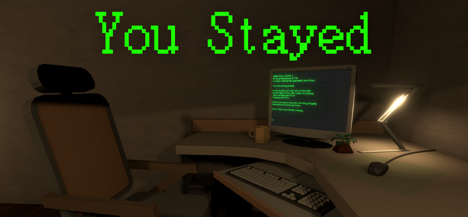
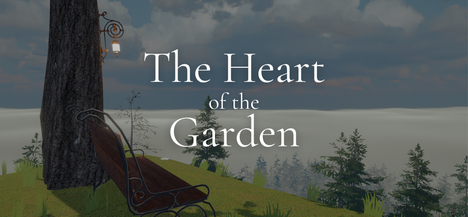
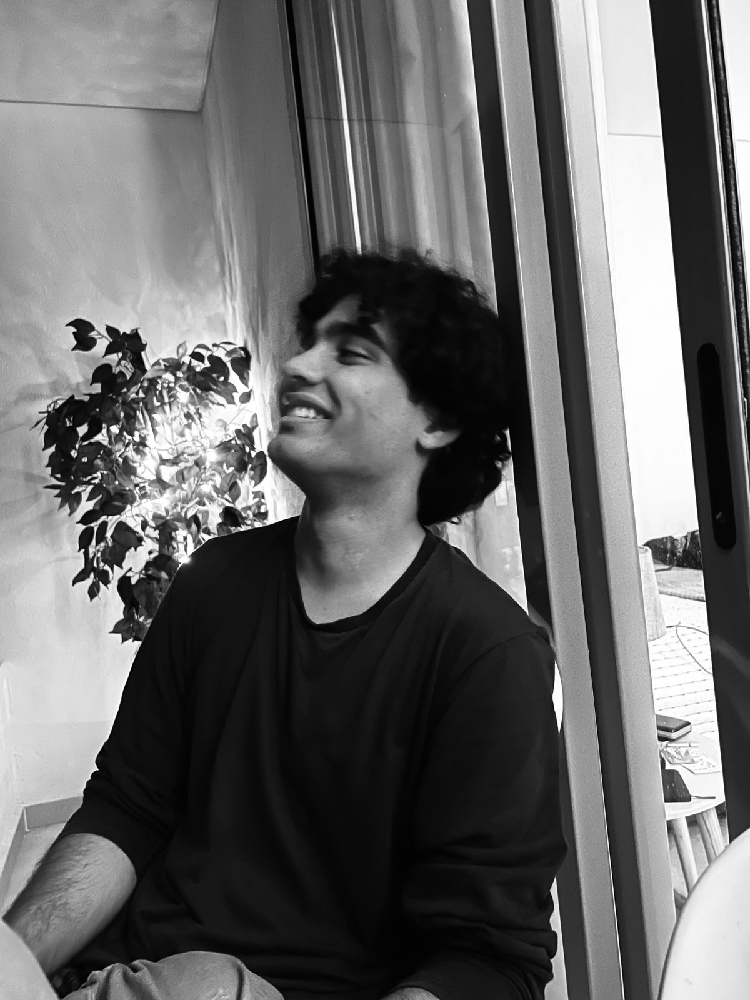

Histórias por onde você caminha
Sou Pedro, designer de jogos e de narrativa. Crio jogos baseados em jogabilidade imersiva e narrativa ambiental, e construo as ferramentas em Unity com as quais projeto.
Game designer no Knock Up Game Studio, ferramentas publicadas na Unity Asset Store, protótipos de terror e narrativos e um mod para Shadows of Doubt.
Trabalhos selecionados
Rogue Dungeons Project
Um dungeon crawler cooperativo local para 4 jogadores, ambientado numa cidade Cyberpunk que é uma única máquina gigante. Projetei o mundo, os sistemas de jogo, o balanceamento cooperativo e a identidade do jogo. O jogo está em desenvolvimento no Knock Up Game Studio, e sou o designer líder.

You Stayed

The Heart of the Garden
Ferramentas, sistemas, escrita e outros projetos
-
Timer Manager para Unity
Um asset comercial para Unity que gerencia todo tipo de timer via código.
-
Audio Manager para Unity
Um asset comercial para Unity que gerencia o áudio dos jogos. Gatilhos por eventos, snapshots de mixer, prioridade para sons sobrepostos e zonas de reverb, com ferramentas no editor.
-
Mod Shadows of Doubt Expanded
Um mod para Shadows of Doubt que adiciona novas mecânicas para os assassinos do jogo.
-
2D Shooter MVP
Um MVP de um shooter 2D inspirado em Vampire Survivors, feito com Unity.
-
Across the Mirror
Um livro de fantasia e ficção científica sobre amor entre mundos e espaço não euclidiano.

Sobre
Sou designer e desenvolvedor de jogos de Ponta Grossa, Brasil. Faço jogos que ficam na mente dos jogadores, que são ao mesmo tempo satisfatórios de jogar e ricos em lore. Escrevo C# na Unity para prototipar minhas próprias ideias e publico as ferramentas que construo pelo caminho.
Certificado Epic Games Game Design Professional (Coursera, 2025).
Inglês fluente, português nativo.
Contato
Aberto a colaborações e vagas em estúdios.
- E-mail pedro@pedroschenegoski.com
- LinkedIn pedro-schenegoski
- itch.io snogg.itch.io
- GitHub Jobberson
- Asset Store Página do publisher